9th Grade Art & Culture Worksheets
31 Art & Culture resources for 9th Grade, ready to print: Organ, Mostra, Kiefer, Jules Verne and more. Each resource page shows the grade range, page count and a preview and links straight to the product on TpT.
31 resources

Organ – Italian Reading Comprehension Worksheet (Scheda): Cloze & Listening
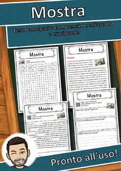
Mostra – Italian Reading Comprehension Worksheet (Scheda): Cloze & Listening

Kiefer – Italian Reading: Cloze Text, Listening Task & Word Search (Scheda)
Jules Verne – Italian Reading: Cloze Text, Listening Task & Word Search (Scheda)
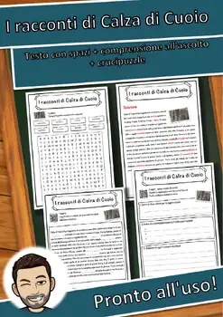
I racconti di Calza di Cuoio – Italian Reading: Cloze, Listening & Word Search
Hans Christian Andersen – Italian Reading: Cloze, Listening & Word Search
Gotico – Italian Reading: Cloze Text, Listening Task & Word Search (Scheda)
Friedrich Dürrenmatt – Italian Reading: Cloze, Listening & Word Search
Franz Marc – Italian Reading: Cloze Text, Listening Task & Word Search (Scheda)
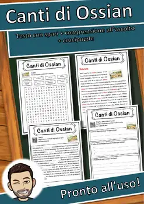
Canti di Ossian – Italian Reading: Cloze, Listening & Word Search
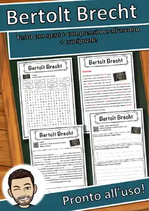
Bertolt Brecht – Italian Reading: Cloze, Listening & Word Search
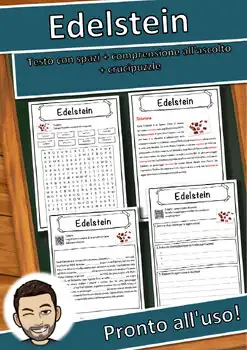
Edelstein – Italian Reading: Cloze Text, Listening Task & Word Search (Scheda)
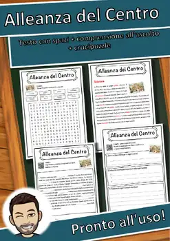
Alleanza del Centro – Italian Reading: Cloze, Listening & Word Search
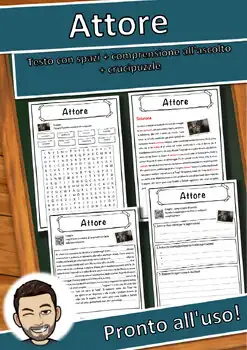
Attore – Italian Reading: Cloze Text, Listening Task & Word Search (Scheda)
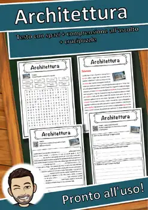
Architettura – Italian Reading: Cloze, Listening & Word Search
Erich Kästner – Italian Reading: Cloze, Listening & Word Search
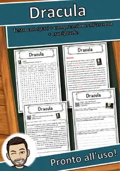
Dracula – Italian Reading: Cloze Text, Listening Task & Word Search (Scheda)
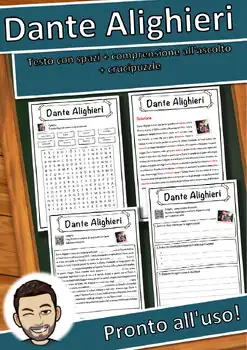
Dante Alighieri – Italian Reading: Cloze, Listening & Word Search
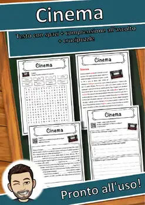
Cinema – Italian Reading: Cloze Text, Listening Task & Word Search (Scheda)
Capitano Orso Blu – Italian Reading: Cloze, Listening & Word Search
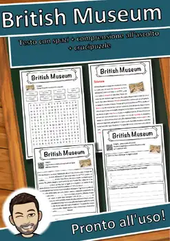
British Museum – Italian Reading: Cloze, Listening & Word Search
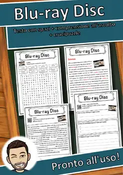
Blu-ray Disc – Italian Reading: Cloze, Listening & Word Search
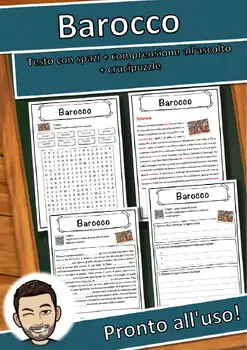
Barocco – Italian Reading: Cloze Text, Listening Task & Word Search (Scheda)
Arthur Conan Doyle – Italian Reading: Cloze, Listening & Word Search
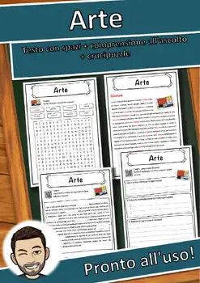
Arte – Italian Reading: Cloze Text, Listening Task & Word Search (Scheda)
Neoclassicismo – Italian Reading Comprehension Worksheet (Scheda didattica)
Lingue retoromanze – Italian Reading Comprehension Worksheet (Scheda didattica)
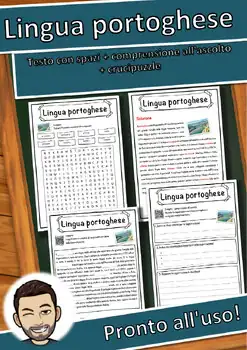
Lingua portoghese – Italian Reading Comprehension Worksheet (Scheda didattica)
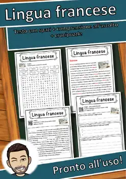
Lingua francese – Italian Reading Comprehension Worksheet (Scheda didattica)
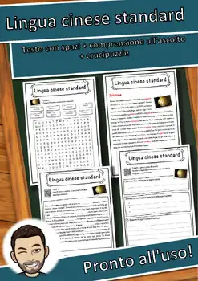
Lingua cinese standard – Italian Reading Comprehension Worksheet
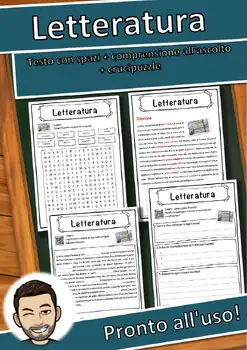
Letteratura – Italian Reading Comprehension Worksheet (Scheda didattica)
No resources found – try a different search term or filter.